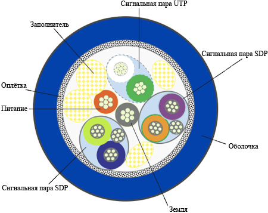

USB 3.0 або USB Super Speed - нове покоління інтерфейсу USB (Universal Serial Bus). Його ключовою відмінністю від попередньої версії USB 2.0 (або High Speed) є зростаюча з 480Мбіт/сек до 5Гбіт/cек максимальна теоретична швидкість передачі даних. Менш очевидний, але настільки ж важливий момент - з версією 3.0 USB не тільки розженеться, а й стане ізохронним і повнодуплексним, тобто знайде можливість незалежно передавати дані в обидві сторони з максимальною швидкістю. Більш ранні версії USB були напівдуплексними, і заявлена максимальна швидкість досягалася тільки при передачі даних в одному напрямку. Це удосконалення вкрай важливо для майбутніх високошвидкісних USB 3.0 SSD і інших пристроїв зберігання даних, оскільки інтерфейс не обмежуватиме потенційні можливості пристрою при одночасному виконанні операцій читання і запису. На практиці між контролером і пристроєм досягається максимальна усталена швидкість передачі даних близько 380Мбайт / cек, що наприклад, швидше, ніж фактична швидкість SATA-II (близько 250Мбайт / cек), і більш ніж на порядок перевищує аналогічний параметр для USB2.0 і IEEE1394. Для того щоб досягти таких характеристик, в USB 3.0 SuperSpeed вперше серйозно була змінена конструкція роз'ємів і кабелів із збереженням максимальної сумісності з попередніми версіями стандарту там, де це можливо. На додаток до наявних в попередніх версіях стандарту лініям живлення, землі та диференціальної пари для передачі даних додано ще дві диференціальні пари для SuperSpeed-режиму і окремий екран, через що сам кабель конструкцією і діаметром став нагадувати екрановані виту пару (STP) категорії 6 , а SuperSpeed частина USB 3.0 продуктивністю і використаними методами передачі інформації дуже нагадує PCI-E 2.0 1x в зовнішньому виконанні, на жаль, будучи з ним повністю несумісною.  Був доданий новий тип роз'єму - USB Powered B. На додаток до вже наявних в USB 3.0 контактам там додані два принципово нових - DPWR і DGND, які забезпечують можливість живлення контроллера підключеним до нього пристроєм (а не навпаки, як було у всіх інших версіях інтерфейсу). Посилено живлення пристроїв - тепер USB3.0 контролер може віддати до 900 мА замість 500 мА у попередньої версії інтерфейсу. Мінімальна "порція" струму збільшена до 150мА, тобто з одного контролера може "годуватися" 6 пристроїв по 150мА або одне - з'їсти все 900. Природно, можливі проміжні варіанти. Мінімальна робоча напруга підключеного пристрою знижено до 4 Вольт. Удосконалення торкнулися не тільки фізичного рівня - на відміну від USB 2.0 HighSpeed, USB 3.0 SuperSpeed контролер організовує індивідуальний віртуальний канал до кожного пристрою, а не транслює всі передані дані всім підключеним до контролера пристроїв (а ті вже самі при цьому розбираються, що з прийнятих пакетів даних дійсно було їм призначено), це дозволяє з деякими застереженнями назвати USB 3.0 хаб - світче, яким він фактично і є. Мабуть, поки єдиний помітний недолік USB 3.0 - це зниження максимальної довжини SuperSpeed кабелю до 3 метрів, але, можливо, ця інформація в подальшому буде уточнена, і за підсумками масового впровадження ця цифра може непринципово змінитися як у більшу, так і в меншу сторону. Механічний ресурс звичайних повнорозмірних USB 3.0 конекторів розрахований на півтори тисячі циклів "підключення-відключення", конекторів підвищеної міцності - на п'ять тисяч таких циклів, а коннектор USB 3.0 Micro найбільш "живучий" - він повинен витримувати до десяти тисяч підключень і відключень.
SuperSpeed роз'єми на додаток до чотирьох контактам, збереженим на звичних місцях для сумісності з попередніми версіями стандарту, отримали ще п'ять специфічних контактів, розташованих глибше всередині роз'ємів і необхідних для роботи в новому швидкісному режимі. Однак повної зворотної сумісності не досягнуто, тому коротко перераховуємо випадки можливих поєднань:
Якщо Вас цікавить більше технічних деталей, то тут можна скачати офіційні специфікації інтерфейса USB 3.0.